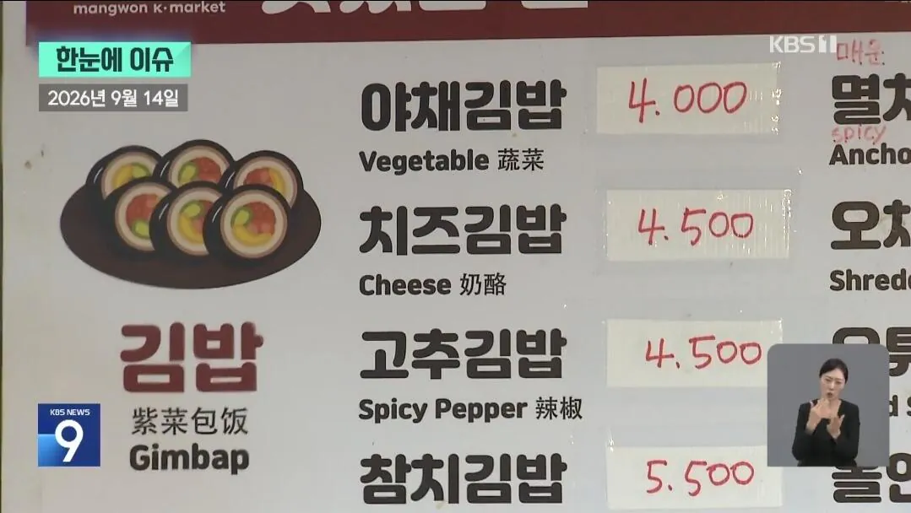
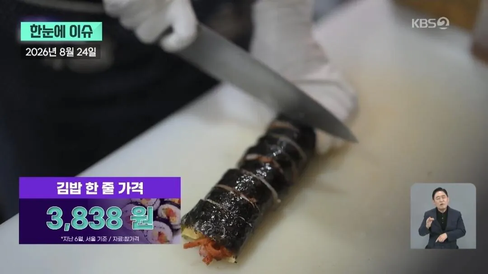
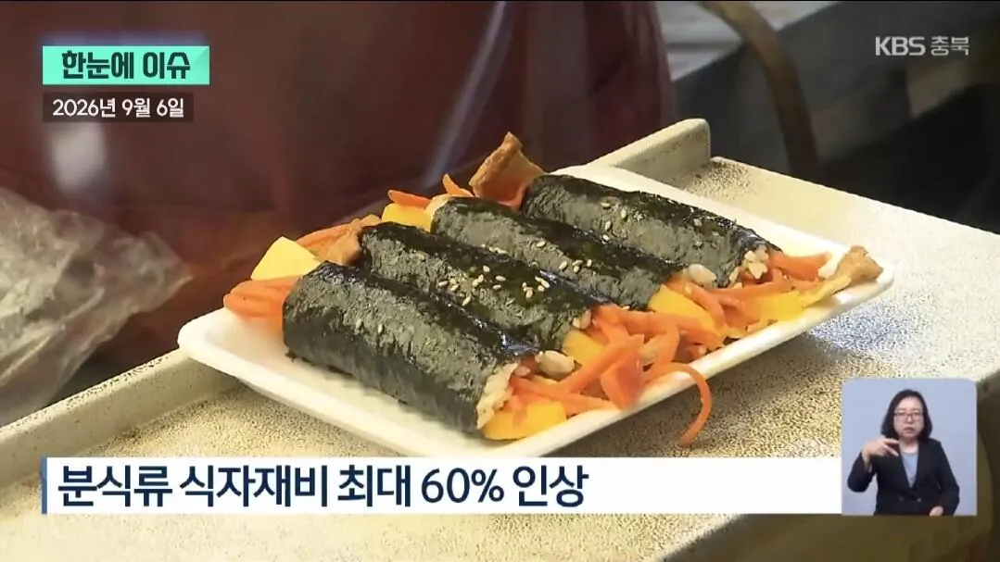
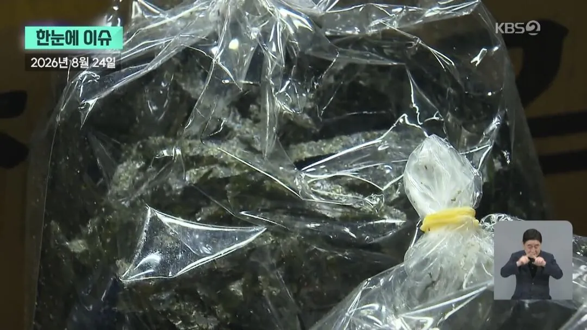
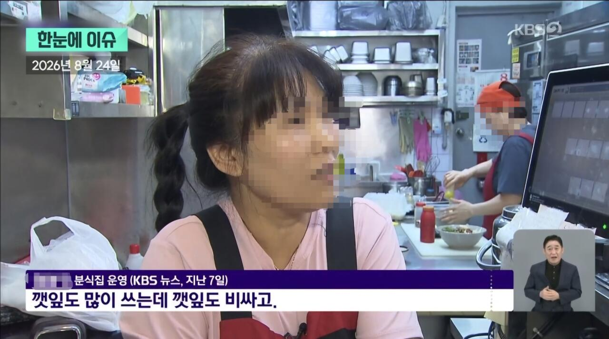
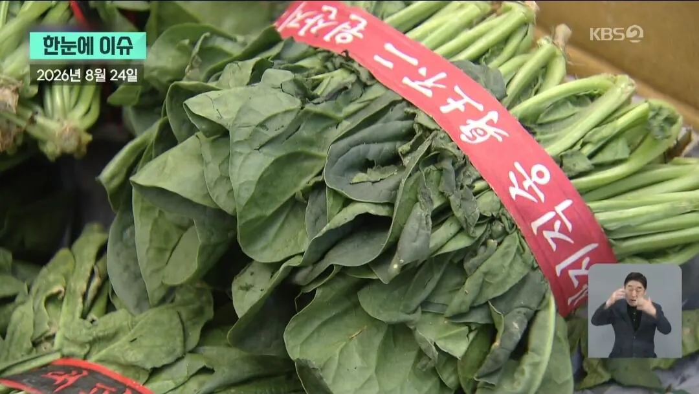
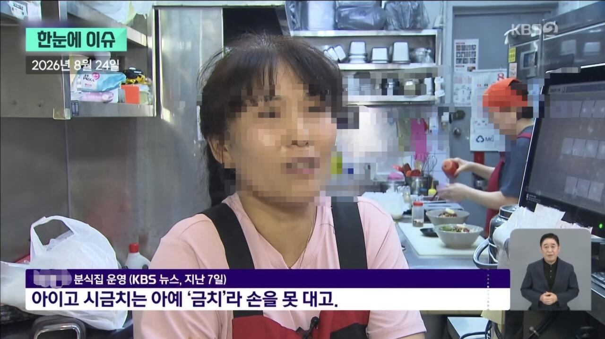
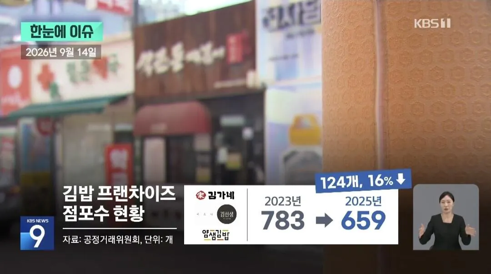
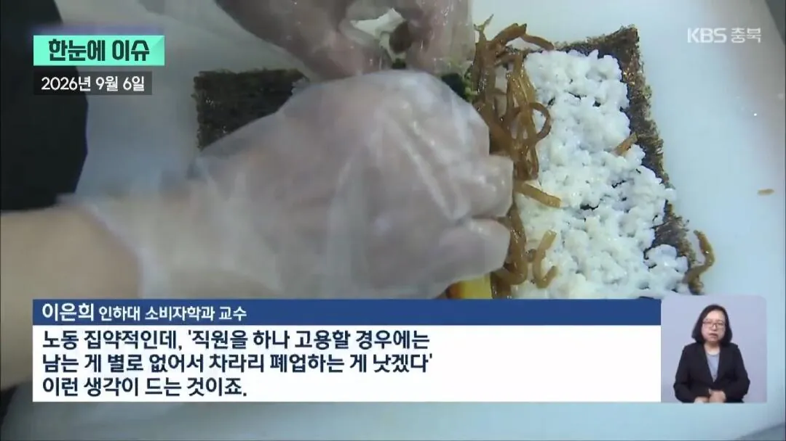
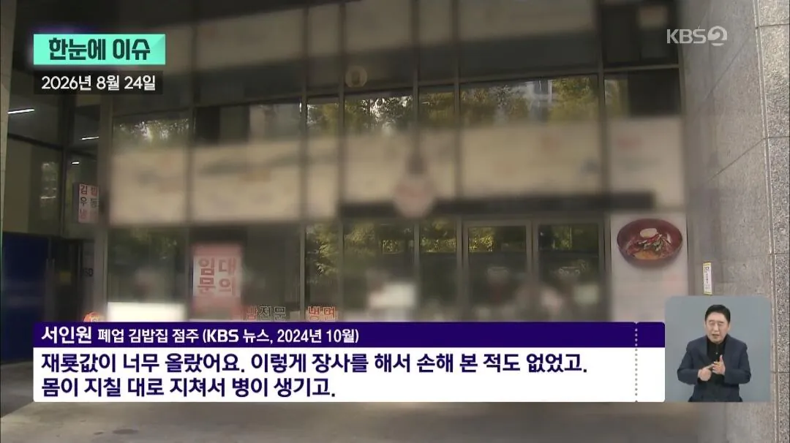

분식집 필수 메뉴 김밥
서울 기준 평균 3,838원
이 가격도 식자재 비용과 인건비 때문에 유지가 힘들다고



김밥에는 필수 기본 식재료(계란, 당근, 단무지, 햄 등)이 들어가야 하는데 날이 갈수록 식자재 값은 오르고
특히 다른 식자재들은 대체할 식자재가 있지만 김은 대체할 수단이 없는데 가격은 계속 오르고 있음


마트 갔을 때 가격 보면 배신감 드는 야채 GOAT



인건비+식자재 비용 때문에 분식 업계 자체가 힘들다고 함
편의점 김밥이 상대적으로 저렴하긴 하지만 뭔가 뭔가 아쉬움
앞으로 킹밥에 대한 인식이 바뀔 수 있을지..
출처: KBS 뉴스
김밥은 노동 대비 싸긴 한데 천 원이 국룰이던 게 너무 뇌리에 꽂혀 있음